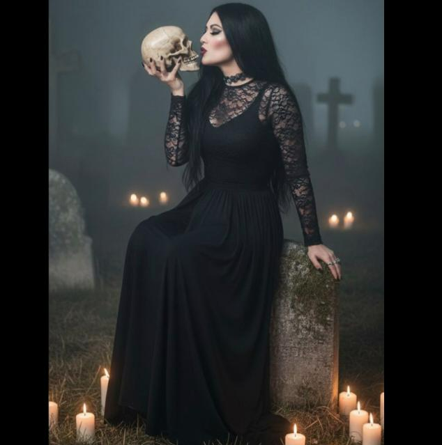

Perfil de Aventurero

Olga
Tipo de Sangre:
O+
Contacto de Emergencia:
Juan Pérez (Hermano) - Tel: +52 55 1234 5678
Nivel de Senderista:
Avanzado ⛰️
Kilómetros Recorridos (Mensual):
~80 km
Kilómetros Recorridos (Anual):
~960 km
Rutas de Senderismo Conquistadas:
Volcán Iztaccíhuatl - La Malinche (México)
Cañón del Sumidero (Chiapas, México)
Parque Nacional Cumbres de Monterrey (Nuevo León, México)
Ruta del Cares (Picos de Europa, España)
Sendero Torres del Paine (Chile)